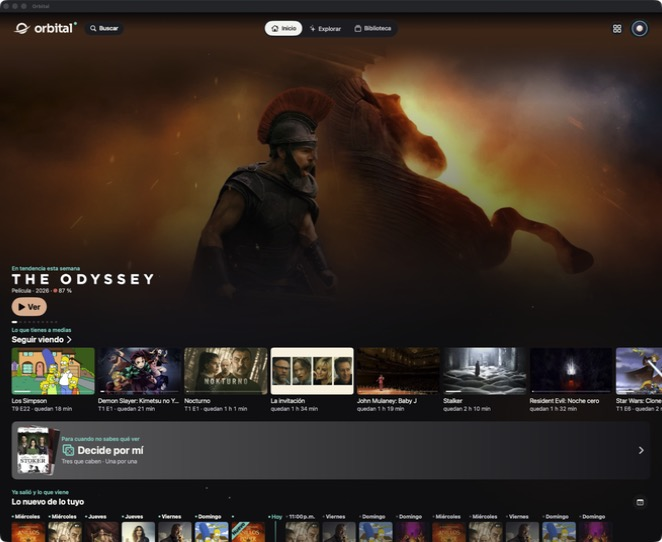
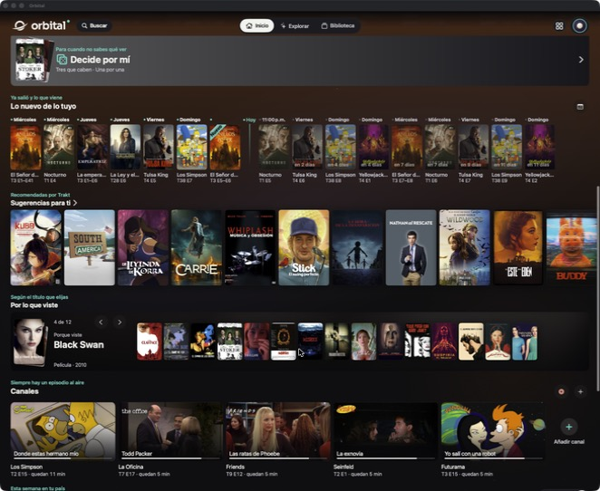
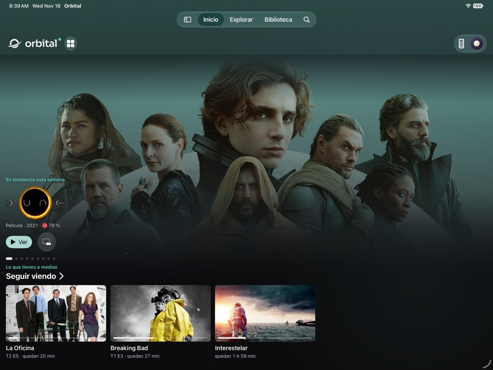
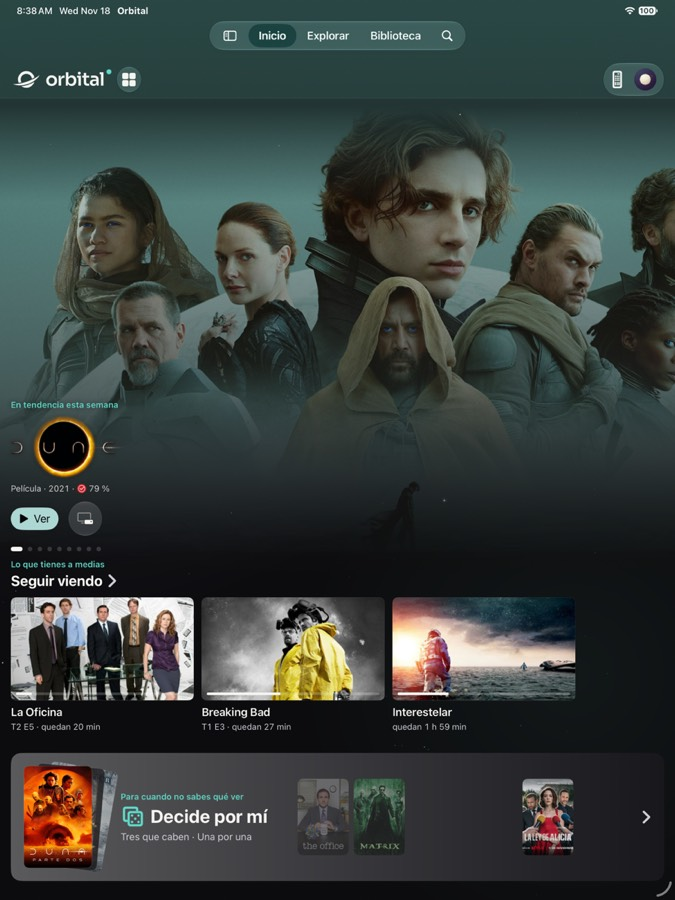

<title>Inicio ancho de Orbital</title>
<meta name="claude:viewport-fit-sides" content="cover">
<link rel="stylesheet" href="https://fonts.googleapis.com/css2?family=Inter:wght@400;500;600;700&family=Space+Grotesk:wght@500;700&display=swap">
<style>
/* Layout: una columna de lectura; arriba cómo se ve hoy, luego lo que cambia siempre (C), las opciones de Mac (MI) y de iPad (II) lado a lado con maqueta, y la recomendación. Oscuro a propósito: Inicio es la sala. */
:root {
  --sala: #0b0e10; --panel: #13181b; --linea: #263036; --texto: #eef2f1; --suave: #9aa7a6;
  --voz: #4fd1c5; --papel: #f3f1ea; --ambar: #e8a650; --rojo: #ff6b6b; --tarjeta: #26343a; --tarjeta2: #31424a;
  --display: "Space Grotesk", "Inter", system-ui, sans-serif; --cuerpo: "Inter", system-ui, -apple-system, sans-serif;
  color-scheme: dark;
}
* { box-sizing: border-box; }
body { background: var(--sala); color: var(--texto); font-family: var(--cuerpo); font-size: 15px; line-height: 1.55; }
.page { max-width: 1180px; margin: 0 auto; padding-block: 40px 80px; padding-left: max(16px, env(safe-area-inset-left, 0px)); padding-right: max(16px, env(safe-area-inset-right, 0px)); display: grid; gap: 56px; }
h1, h2, h3 { font-family: var(--display); text-wrap: balance; margin: 0; }
h1 { font-size: clamp(28px, 4vw, 40px); }
h2 { font-size: 24px; }
h3 { font-size: 17px; }
p { margin: 0; max-width: 68ch; }
.porque { color: var(--voz); font-size: 13px; font-weight: 600; }
.intro { display: grid; gap: 14px; }
.intro p { color: var(--suave); }
section { display: grid; gap: 20px; }
.opciones { display: grid; grid-template-columns: repeat(auto-fit, minmax(300px, 1fr)); gap: 20px; }
.opcion { display: grid; gap: 12px; align-content: start; min-width: 0; padding: 16px; border-radius: 16px; background: var(--panel); border: 1px solid var(--linea); }
.opcion.reco { border-color: var(--voz); }
.cab { display: flex; align-items: baseline; gap: 10px; flex-wrap: wrap; }
.codigo { font-family: var(--display); font-weight: 700; font-size: 20px; color: var(--voz); }
.sello { font-size: 12px; font-weight: 600; color: var(--sala); background: var(--voz); padding: 2px 8px; border-radius: 6px; }
.pro, .contra { margin: 0; padding-left: 18px; display: grid; gap: 4px; font-size: 14px; }
.pro li::marker { content: "+  "; color: var(--voz); }
.contra li::marker { content: "–  "; color: var(--rojo); }
.par { display: grid; gap: 8px; }
.etq { font-size: 12px; color: var(--suave); }
.reco-box { padding: 20px; border-radius: 16px; background: color-mix(in oklab, var(--voz) 10%, var(--panel)); border: 1px solid color-mix(in oklab, var(--voz) 45%, transparent); display: grid; gap: 10px; }
.dictado { font-family: var(--display); font-size: 18px; color: var(--voz); }
.lista { margin: 0; padding-left: 18px; display: grid; gap: 6px; font-size: 14px; color: var(--suave); }
.lista b { color: var(--texto); }
.hoy { display: grid; grid-template-columns: repeat(auto-fit, minmax(260px, 1fr)); gap: 16px; align-items: start; }
.hoy figure { margin: 0; display: grid; gap: 6px; min-width: 0; }
.hoy img { width: 100%; border-radius: 10px; border: 1px solid var(--linea); display: block; }
.hoy figcaption { font-size: 12px; color: var(--suave); }
.problemas { display: grid; grid-template-columns: repeat(auto-fit, minmax(260px, 1fr)); gap: 12px; }
.problema { padding: 14px 16px; border-radius: 12px; background: var(--panel); border: 1px solid var(--linea); display: grid; gap: 4px; font-size: 14px; color: var(--suave); }
.problema b { color: var(--texto); font-size: 15px; }
.siempre { display: grid; grid-template-columns: repeat(auto-fit, minmax(320px, 1fr)); gap: 16px; }
.siempre .opcion { gap: 10px; }

/* ——— Maquetas: arte dibujado con degradados; nada es una captura ——— */
.m { position: relative; width: 100%; overflow: hidden; border-radius: 10px; background: var(--sala); border: 1px solid var(--linea); container-type: inline-size; }
.mac { aspect-ratio: 16 / 10; }
.ipv { aspect-ratio: 3 / 4; max-width: 300px; justify-self: center; }
.iph { aspect-ratio: 4 / 3; }
.mini { aspect-ratio: 16 / 7; }
.arte { position: absolute; background:
  radial-gradient(circle at 64% 30%, #d9b48a 0 6%, transparent 6.4%),
  radial-gradient(ellipse at 64% 62%, #2f4b52 0 17%, transparent 17.5%),
  radial-gradient(circle at 80% 38%, #b98f6a 0 4.5%, transparent 4.8%),
  radial-gradient(ellipse at 80% 66%, #3b3b2e 0 12%, transparent 12.4%),
  radial-gradient(circle at 47% 40%, #c49a77 0 4%, transparent 4.3%),
  radial-gradient(ellipse at 47% 70%, #2b3a3a 0 11%, transparent 11.4%),
  linear-gradient(160deg, #5f8a8a 0%, #2c4a50 45%, #172529 100%); }
.arte.centro { background:
  radial-gradient(circle at 50% 30%, #d9b48a 0 9%, transparent 9.4%),
  radial-gradient(ellipse at 50% 64%, #2f4b52 0 24%, transparent 24.5%),
  radial-gradient(circle at 76% 40%, #b98f6a 0 6%, transparent 6.4%),
  radial-gradient(circle at 24% 42%, #c49a77 0 6%, transparent 6.4%),
  linear-gradient(170deg, #5f8a8a 0%, #2c4a50 45%, #172529 100%); }
.velo { position: absolute; background: linear-gradient(90deg, rgba(11,14,16,.85) 0%, rgba(11,14,16,.35) 40%, transparent 65%), linear-gradient(180deg, transparent 50%, rgba(11,14,16,.9) 88%, var(--sala) 100%); }
.redondo { border-radius: 1.4cqi; overflow: hidden; }
/* la barra de arriba: pestañas al centro; en iPad, logo y foto en la misma línea (C1) */
.barra { position: absolute; left: 0; right: 0; top: 0; height: 7cqi; display: flex; align-items: center; justify-content: space-between; padding: 0 3cqi; z-index: 2; }
.barra .logoapp { width: 10cqi; height: 1.8cqi; border-radius: 1cqi; background: var(--texto); opacity: .85; }
.barra .tabs { position: absolute; left: 50%; transform: translateX(-50%); width: 28cqi; height: 3.4cqi; border-radius: 3cqi; background: rgba(255,255,255,.1); border: 1px solid rgba(255,255,255,.14); }
.barra .tabs::before { content: ""; position: absolute; left: 4%; top: 15%; bottom: 15%; width: 26%; border-radius: 3cqi; background: rgba(79,209,197,.35); }
.barra .yo { width: 3.2cqi; height: 3.2cqi; border-radius: 50%; background: #3a3550; border: 1px solid rgba(255,255,255,.2); }
.barra2 { position: absolute; left: 0; right: 0; top: 7cqi; height: 7cqi; border-bottom: 1px solid rgba(255,255,255,.08); }
/* piezas */
.col { position: absolute; display: grid; gap: 1.1cqi; z-index: 1; }
.porquemini { height: .9cqi; width: 12cqi; border-radius: 1cqi; background: var(--voz); opacity: .8; }
.logo { height: 4cqi; width: 20cqi; border-radius: 1cqi; background: linear-gradient(90deg, var(--papel) 0 18%, transparent 18% 26%, var(--ambar) 26% 50%, transparent 50% 58%, var(--papel) 58% 76%, transparent 76% 84%, var(--papel) 84%); opacity: .95; }
.datos { height: 1cqi; width: 16cqi; border-radius: 1cqi; background: var(--suave); opacity: .6; }
.ver { height: 3.4cqi; width: 12cqi; border-radius: 3cqi; background: var(--papel); }
.puntos { height: .7cqi; width: 10cqi; background: radial-gradient(circle, var(--suave) 40%, transparent 45%) 0 0 / 1.2cqi 100% repeat-x; opacity: .7; }
.titfila { position: absolute; height: 1.3cqi; width: 12cqi; border-radius: 1cqi; background: var(--texto); opacity: .75; z-index: 1; }
.fila { position: absolute; display: flex; gap: 1.2cqi; z-index: 1; }
.fila i { display: block; flex: none; width: 15cqi; aspect-ratio: 16/9; border-radius: .9cqi; background: var(--tarjeta); position: relative; overflow: hidden; }
.fila.avance i::after { content: ""; position: absolute; left: 6%; right: 6%; bottom: 7%; height: 5%; border-radius: 1cqi; background: linear-gradient(90deg, var(--papel) 45%, rgba(255,255,255,.25) 45%); }
.fila.poster i { width: 8cqi; aspect-ratio: 2/3; background: var(--tarjeta2); }
.fila.chico i { width: 6cqi; aspect-ratio: 2/3; }
.flecha { position: absolute; width: 3.4cqi; height: 3.4cqi; border-radius: 50%; background: rgba(243,241,234,.9); z-index: 2; display: grid; place-items: center; color: var(--sala); font-weight: 700; font-size: 2.2cqi; line-height: 1; }
.guia { position: absolute; top: 0; bottom: 0; border-left: 1px dashed rgba(79,209,197,.7); z-index: 3; }
/* el panel del tablero: lo tuyo a la derecha de la portada */
.panelm { position: absolute; display: grid; gap: 1cqi; align-content: start; padding: 1.6cqi; border-radius: 1.4cqi; background: rgba(19,24,27,.92); border: 1px solid var(--linea); z-index: 1; }
.renglon { display: grid; grid-template-columns: 9cqi 1fr; gap: 1cqi; align-items: center; }
.renglon i { display: block; aspect-ratio: 16/9; border-radius: .7cqi; background: var(--tarjeta); position: relative; overflow: hidden; }
.renglon i::after { content: ""; position: absolute; left: 6%; right: 6%; bottom: 8%; height: 7%; border-radius: 1cqi; background: linear-gradient(90deg, var(--papel) 55%, rgba(255,255,255,.25) 55%); }
.renglon b { display: grid; gap: .6cqi; }
.renglon b::before, .renglon b::after { content: ""; height: .9cqi; border-radius: 1cqi; background: var(--texto); opacity: .7; width: 80%; }
.renglon b::after { opacity: .35; width: 55%; }
.cabpanel { font: 600 1.6cqi/1.2 var(--cuerpo); color: var(--texto); white-space: nowrap; }
.rotulo { position: absolute; font: 600 1.6cqi/1.2 var(--cuerpo); color: var(--texto); z-index: 1; white-space: nowrap; }
.pliegue { position: absolute; left: 0; right: 0; border-top: 1px dashed var(--ambar); z-index: 3; }
.pliegue::after { content: "lo que ves sin bajar"; position: absolute; right: 1.5cqi; top: .3cqi; font: 500 1.4cqi/1 var(--cuerpo); color: var(--ambar); }
.dias { display: grid; grid-template-columns: repeat(4, 1fr); gap: .8cqi; }
.dias i { display: block; aspect-ratio: 2/3; border-radius: .6cqi; background: var(--tarjeta2); position: relative; }
.dias i::before { content: ""; position: absolute; left: 0; right: 30%; top: -1.2cqi; height: .7cqi; border-radius: 1cqi; background: var(--voz); opacity: .7; }
.decide { position: absolute; display: flex; gap: 1cqi; align-items: center; padding: 1cqi 1.4cqi; border-radius: 1.2cqi; background: #1b2226; border: 1px solid var(--linea); z-index: 1; }
.decide i { display: block; width: 4cqi; aspect-ratio: 2/3; border-radius: .5cqi; background: #8a5a2c; }
.decide b { display: block; width: 12cqi; height: 1.2cqi; border-radius: 1cqi; background: var(--texto); opacity: .75; }
.lado { position: absolute; top: 0; bottom: 0; left: 0; width: 16%; background: #11171a; border-right: 1px solid var(--linea); z-index: 2; display: grid; align-content: start; gap: 1.3cqi; padding: 3cqi 1.6cqi; }
.lado b { display: block; height: 1cqi; border-radius: 1cqi; background: var(--suave); opacity: .55; }
.lado b.on { background: var(--voz); opacity: .9; }
.lado b.sep { margin-top: 1.4cqi; opacity: .3; width: 50%; }
.aviso { font-size: 14px; padding: 10px 12px; border-radius: 10px; background: color-mix(in oklab, var(--ambar) 14%, var(--panel)); border: 1px solid color-mix(in oklab, var(--ambar) 40%, transparent); }
@media (max-width: 640px) { .ipv { max-width: 100%; } }
@media (prefers-reduced-motion: no-preference) { .opcion { transition: border-color .2s; } }
</style>

<main class="page">
  <header class="intro">
    <span class="porque">Para dictar con códigos · 18 nov 2026</span>
    <h1>Inicio en la Mac y el iPad, replanteado</h1>
    <p>Inicio es la primera pantalla: ahí sigues lo que dejaste a medias, ves lo nuevo de tus series y descubres qué ver. En el iPhone funciona. En la Mac y el iPad es el Inicio del iPhone estirado. Abajo está cómo se ve hoy, seis arreglos que van en cualquier opción (C1 a C6), tres caminos para la Mac (MI1 a MI3) y tres para el iPad (II1 a II3). Cada camino trae una maqueta, qué ganas y qué pierdes. Al final va mi recomendación.</p>
  </header>

  <!-- ——— HOY ——— -->
  <section>
    <div class="intro">
      <span class="porque">Cómo se ve hoy</span>
      <h2>Es el Inicio del iPhone, más grande</h2>
    </div>
    <div class="hoy">
      <figure><figcaption>Mac, ventana de 1200 pt. Arriba, la portada y «Seguir viendo».</figcaption></figure>
      <figure><figcaption>Mac, más abajo: cada fila tiene otra forma y otro tamaño.</figcaption></figure>
      <figure><figcaption>iPad acostado: dos barras arriba y todo pegado a la orilla izquierda.</figcaption></figure>
      <figure><figcaption>iPad parado: la portada ocupa más de la mitad; «Decide por mí» con huecos.</figcaption></figure>
    </div>
    <div class="problemas">
      <div class="problema"><b>1 · Dos barras en el iPad</b>Las pestañas y, debajo, otra fila con el logo, el control y tu foto. Se pierden unos 70 pt antes de que empiece el arte.</div>
      <div class="problema"><b>2 · Márgenes que no crecen</b>En el iPad, 16 pt de orilla; en la Mac, 40 pt fijos. En pantallas de 1000 a 2600 pt todo arranca a la izquierda y la derecha queda vacía.</div>
      <div class="problema"><b>3 · La portada chica dentro de un arte gigante</b>Logo, datos y «Ver» en tamaño de iPhone, en la esquina. Los puntitos para cambiar de título casi no se ven.</div>
      <div class="problema"><b>4 · Casi todas las filas solo se deslizan de lado</b>«Por lo que viste» ya tiene ‹ ›; las demás no, y con mouse de rueda no hay cómo moverlas (con trackpad sí, con dos dedos). Ves 7 u 8 cosas y el resto no sabes que existe.</div>
      <div class="problema"><b>5 · Sin ritmo</b>«Lo nuevo de lo tuyo» es diminuto en la Mac y otras filas son enormes. Cada fila tiene su propio tamaño de tarjeta.</div>
      <div class="problema"><b>6 · Espacio muerto</b>Con pocos títulos a medias (3 en el iPad), «Seguir viendo» deja media pantalla vacía. «Decide por mí» es una franja de orilla a orilla con cuatro pósters sueltos y huecos.</div>
      <div class="problema"><b>7 · Abres y solo ves la portada</b>En el iPad acostado y en la Mac, lo tuyo (series nuevas, sugerencias) empieza después de una pantalla entera de arte.</div>
    </div>
  </section>

  <!-- ——— SIEMPRE ——— -->
  <section>
    <div class="intro">
      <span class="porque">Van en cualquier opción · los puedes quitar uno por uno</span>
      <h2>C1–C6: lo que se arregla siempre</h2>
      <p>Solo en pantalla ancha (Mac e iPad). El iPhone y la TV no cambian con esto.</p>
    </div>
    <div class="siempre">
      <article class="opcion">
        <div class="cab"><span class="codigo">C1</span><h3>Una sola barra en el iPad</h3></div>
        <div class="m mini"><div class="barra"><span class="logoapp"></span><span class="tabs"></span><span class="yo"></span></div><div class="arte" style="inset:7cqi 0 0 0"></div><div class="velo" style="inset:7cqi 0 0 0"></div></div>
        <p>El logo a la izquierda y el control con tu foto a la derecha, en la misma línea de las pestañas, como en la Mac. «Todo ▾» y las historias de Aprende bajan a la primera línea de la portada. El arte sube unos 70 pt (por medir).</p>
      </article>
      <article class="opcion">
        <div class="cab"><span class="codigo">C2</span><h3>La misma orilla que la ficha</h3></div>
        <div class="m mini"><div class="arte" style="inset:0"></div><div class="velo" style="inset:0"></div><div class="guia" style="left:6%"></div><div class="col" style="left:6%;bottom:16%"><div class="logo"></div><div class="ver"></div></div><div class="fila avance" style="left:6%;bottom:-6%"><i></i><i></i><i></i><i></i><i></i></div></div>
        <p>El margen de la ficha: el 5 % de su escenario (de 40 a 160 pt), y todo arranca en esa línea: portada, títulos de sección y filas. Es el arreglo más laborioso: hoy el margen es un número fijo que usan todas las filas.</p>
      </article>
      <article class="opcion">
        <div class="cab"><span class="codigo">C3</span><h3>La portada a escala</h3></div>
        <div class="m mini"><div class="arte" style="inset:0"></div><div class="velo" style="inset:0"></div><div class="col" style="left:6%;bottom:14%"><div class="porquemini"></div><div class="logo" style="width:28cqi;height:6cqi"></div><div class="datos"></div><div class="ver" style="width:16cqi;height:4.4cqi"></div><div class="puntos"></div></div></div>
        <p>Logo, «Ver» y puntitos crecen con la pantalla, como en la ficha ancha. La cara del arte cae en la zona libre, no detrás del texto.</p>
      </article>
      <article class="opcion">
        <div class="cab"><span class="codigo">C4</span><h3>Flechas en las filas</h3></div>
        <div class="m mini"><div class="titfila" style="left:6%;top:20%"></div><div class="fila poster" style="left:6%;top:32%"><i></i><i></i><i></i><i></i><i></i><i></i><i></i><i></i><i></i><i></i><i></i></div><div class="flecha" style="right:2%;top:47%">›</div><div class="flecha" style="left:2%;top:47%;opacity:.35">‹</div></div>
        <p>Con mouse o trackpad, al pasar el puntero salen ‹ › en las orillas y avanzan una pantalla: las mismas flechas que ya tiene «Por lo que viste», en todas las filas. También con el trackpad del iPad. Es una sola pieza nueva para todas las filas. Con el dedo, todo igual que hoy.</p>
      </article>
      <article class="opcion">
        <div class="cab"><span class="codigo">C5</span><h3>Una rejilla para todo</h3></div>
        <div class="m mini"><div class="fila avance" style="left:6%;top:12%"><i style="width:19cqi"></i><i style="width:19cqi"></i><i style="width:19cqi"></i><i style="width:19cqi"></i></div><div class="fila poster" style="left:6%;top:52%"><i style="width:11.8cqi"></i><i style="width:11.8cqi"></i><i style="width:11.8cqi"></i><i style="width:11.8cqi"></i><i style="width:11.8cqi"></i><i style="width:11.8cqi"></i><i style="width:11.8cqi"></i></div><div class="guia" style="left:6%"></div><div class="guia" style="left:94%"></div></div>
        <p>Cada tipo de tarjeta cuenta columnas según el ancho: tarjetas anchas de 3 a 6, pósters de 5 a 10. El Top 10 usa el mismo póster que las sugerencias y «Lo nuevo de lo tuyo» toma el ancho de un póster (sigue siendo su tarjeta con fecha). Nada gigante, nada diminuto.</p>
      </article>
      <article class="opcion">
        <div class="cab"><span class="codigo">C6</span><h3>«Decide por mí» compacto</h3></div>
        <div class="m mini"><div class="fila avance" style="left:6%;top:14%"><i style="width:19cqi"></i><i style="width:19cqi"></i><i style="width:19cqi"></i></div><div class="decide" style="left:69%;top:14%;width:25%;height:30%;flex-direction:column;align-items:flex-start;justify-content:center"><i></i><b></b></div></div>
        <p>Una tarjeta del tamaño de una tarjeta ancha, al final de «Seguir viendo» si cabe, en lugar de la franja de orilla a orilla. Llena el hueco del problema 6. Con MI2, «Seguir viendo» se va al panel y «Decide por mí» queda al final de la primera fila de abajo.</p>
      </article>
    </div>
  </section>

  <!-- ——— MAC ——— -->
  <section>
    <div class="intro">
      <span class="porque">Mac · de 1100 a unos 2600 pt de ancho, con mouse y teclado</span>
      <h2>Mac: qué ves al abrir</h2>
      <p>En la Mac estás sentado, cerca, con mouse. Cabe mucho más de lo que cabe en la tele o en el teléfono. La pregunta es qué ves sin bajar.</p>
    </div>
    <div class="opciones">
      <article class="opcion">
        <div class="cab"><span class="codigo">MI1</span><h3>Cine</h3></div>
        <div class="par">
          <div class="m mac"><div class="arte" style="inset:0 0 34% 0"></div><div class="velo" style="inset:0 0 34% 0"></div><div class="barra"><span class="logoapp"></span><span class="tabs"></span><span class="yo"></span></div>
            <div class="col" style="left:6%;top:24%"><div class="porquemini"></div><div class="logo" style="width:26cqi;height:5cqi"></div><div class="datos"></div><div class="ver" style="width:14cqi"></div><div class="puntos"></div></div>
            <span class="rotulo" style="left:6%;top:60%">Seguir viendo</span><div class="fila avance" style="left:6%;top:65%"><i style="width:17cqi"></i><i style="width:17cqi"></i><i style="width:17cqi"></i><i style="width:17cqi"></i><i style="width:17cqi"></i></div><div class="flecha" style="right:2%;top:70%">›</div>
            <div class="titfila" style="left:6%;top:88%"></div><div class="pliegue" style="top:86%"></div></div>
          <span class="etq">Mac 16:10 · la portada en el 65 % de la ventana; «Seguir viendo» se encima en su orilla</span>
        </div>
        <p>Como la TV y el iPhone: arte de orilla a orilla, «Seguir viendo» encima de su borde y las filas debajo, con C1–C6.</p>
        <ul class="pro"><li>Igual que la TV: una sola Orbital.</li><li>Lo que más luce el arte.</li><li>El menor cambio: es arreglar lo de hoy.</li></ul>
        <ul class="contra"><li>Lo nuevo de tus series, tus sugerencias y Mi lista siguen abajo: hay que bajar para verlos.</li><li>En el ultrawide, la portada sigue siendo casi todo lo que ves.</li></ul>
      </article>

      <article class="opcion reco">
        <div class="cab"><span class="codigo">MI2</span><h3>Tablero: portada y lo tuyo lado a lado</h3><span class="sello">Recomendada</span></div>
        <div class="par">
          <div class="m mac"><div class="barra"><span class="logoapp"></span><span class="tabs"></span><span class="yo"></span></div>
            <div class="arte redondo" style="left:6%;top:9%;width:58%;height:50%"></div><div class="velo redondo" style="left:6%;top:9%;width:58%;height:50%"></div>
            <div class="col" style="left:9%;top:34%"><div class="porquemini"></div><div class="logo" style="width:20cqi;height:4cqi"></div><div class="datos"></div><div class="ver"></div></div>
            <div class="panelm" style="left:66%;top:9%;width:28%;height:50%"><span class="cabpanel">Seguir viendo</span><div class="renglon"><i></i><b></b></div><div class="renglon"><i></i><b></b></div><div class="renglon"><i></i><b></b></div><span class="cabpanel" style="margin-top:.6cqi">Hoy sale</span><div class="dias"><i></i><i></i><i></i><i></i></div></div>
            <div class="titfila" style="left:6%;top:64%"></div><div class="fila poster" style="left:6%;top:68%"><i style="width:9.3cqi"></i><i style="width:9.3cqi"></i><i style="width:9.3cqi"></i><i style="width:9.3cqi"></i><i style="width:9.3cqi"></i><i style="width:9.3cqi"></i><i style="width:9.3cqi"></i><i style="width:9.3cqi"></i><i style="width:9.3cqi"></i></div><div class="flecha" style="right:2%;top:76%">›</div><div class="pliegue" style="top:94%"></div></div>
          <span class="etq">Mac 16:10 · a la izquierda la portada; a la derecha «Seguir viendo» (3) y «Hoy sale» de tus series</span>
        </div>
        <p>Arriba, dos cosas a la vez: la portada (lo que todos ven) en dos tercios y, a su derecha, <b>lo tuyo</b>: lo que tienes a medias, con su avance, y lo que sale esta semana de tus series. El panel enseña tus 3 más recientes y «Ver todo» abre la lista completa. Debajo, las filas de siempre con C1–C6. «Lo nuevo de lo tuyo» sale de las filas de abajo para no repetirse. Si la ventana es angosta (menos de unos 1200 pt en la Mac, más o menos media pantalla), se vuelve MI1.</p>
        <ul class="pro"><li>Abres y ves, sin bajar, qué seguir y qué hay nuevo de lo tuyo: las dos cosas que más haces. Resuelve el problema 7.</li><li>Aprovecha el ancho: en el ultrawide el panel crece y cabe la semana completa.</li><li>El mismo criterio que la ficha ancha (ventana acostada y espacio para dos columnas): Inicio y la ficha cambian en el mismo tamaño.</li></ul>
        <ul class="contra"><li>La portada es más chica: menos cine.</li><li>Ves 3 de lo que tienes a medias, no 8 como hoy: el resto queda a un clic.</li><li>Distinto a la TV a propósito (la TV sigue con portada de orilla a orilla); se anota en la lista de lo que la TV y la app hacen distinto.</li><li>Con el control abierto a la derecha, el tablero se aprieta o se vuelve cine.</li><li>Con «Películas» elegido, el panel solo tiene lo que tienes a medias; y hay que dibujar el panel vacío.</li><li>Es el que más trabajo lleva: los datos ya existen, pero el panel, sus renglones y «Hoy sale» por día son piezas nuevas.</li></ul>
      </article>

      <article class="opcion">
        <div class="cab"><span class="codigo">MI3</span><h3>Barra lateral</h3></div>
        <div class="par">
          <div class="m mac"><div class="lado"><b class="on"></b><b></b><b></b><b></b><b class="sep"></b><b></b><b></b><b></b><b></b></div>
            <div class="arte redondo" style="left:19%;top:5%;width:77%;height:52%"></div><div class="velo redondo" style="left:19%;top:5%;width:77%;height:52%"></div>
            <div class="col" style="left:22%;top:30%"><div class="porquemini"></div><div class="logo"></div><div class="datos"></div><div class="ver"></div></div>
            <div class="titfila" style="left:19%;top:62%"></div><div class="fila avance" style="left:19%;top:66%"><i style="width:15cqi"></i><i style="width:15cqi"></i><i style="width:15cqi"></i><i style="width:15cqi"></i><i style="width:15cqi"></i></div></div>
          <span class="etq">Mac 16:10 · a la izquierda Inicio, Explorar, Biblioteca, Buscar y tus canales y listas</span>
        </div>
        <p class="aviso">Va junto con II3. Esto ya no es solo Inicio: cambia cómo te mueves por toda la app. Si te interesa, va en su propia propuesta.</p>
        <p>Como Música o Apple TV en la Mac: una barra a la izquierda con las secciones y, debajo, tus canales y tus listas a un clic. Inicio va a la derecha con la portada en tarjeta.</p>
        <ul class="pro"><li>Se siente app de Mac.</li><li>Canales y listas siempre a la mano.</li></ul>
        <ul class="contra"><li>Cambia la navegación de toda la app, no solo Inicio.</li><li>Le quita 200 pt a todo; la portada queda más chica que en MI1.</li><li>Las pestañas de arriba (Inicio, Explorar, Biblioteca) ya funcionan; esto las duplica o las quita.</li></ul>
      </article>
    </div>
  </section>

  <!-- ——— IPAD ——— -->
  <section>
    <div class="intro">
      <span class="porque">iPad · parado 1032 × 1376 pt, acostado 1376 × 1032 pt, con el dedo</span>
      <h2>iPad: parado y acostado</h2>
      <p>El iPad se usa con el dedo, en el sillón o en la cama, y se gira. Parado es un iPhone grande; acostado se parece a una Mac chica. Por eso las opciones dicen qué pasa en cada posición.</p>
    </div>
    <div class="opciones">
      <article class="opcion reco">
        <div class="cab"><span class="codigo">II1</span><h3>Acostado como la Mac, parado como el iPhone</h3><span class="sello">Recomendada</span></div>
        <div class="par">
          <div class="m iph"><div class="barra"><span class="logoapp"></span><span class="tabs"></span><span class="yo"></span></div>
            <div class="arte redondo" style="left:5%;top:10%;width:58%;height:52%"></div><div class="velo redondo" style="left:5%;top:10%;width:58%;height:52%"></div>
            <div class="col" style="left:8%;top:38%"><div class="logo" style="width:18cqi"></div><div class="datos"></div><div class="ver"></div></div>
            <div class="panelm" style="left:65%;top:10%;width:30%;height:52%"><span class="cabpanel">Seguir viendo</span><div class="renglon"><i></i><b></b></div><div class="renglon"><i></i><b></b></div><div class="renglon"><i></i><b></b></div><span class="cabpanel" style="margin-top:.6cqi">Hoy sale</span><div class="dias"><i></i><i></i><i></i><i></i></div></div>
            <div class="titfila" style="left:5%;top:68%"></div><div class="fila poster" style="left:5%;top:73%"><i style="width:10.6cqi"></i><i style="width:10.6cqi"></i><i style="width:10.6cqi"></i><i style="width:10.6cqi"></i><i style="width:10.6cqi"></i><i style="width:10.6cqi"></i><i style="width:10.6cqi"></i><i style="width:10.6cqi"></i></div></div>
          <span class="etq">Acostado: el tablero de MI2</span>
          <div class="m ipv"><div class="barra"><span class="logoapp"></span><span class="tabs" style="width:38cqi"></span><span class="yo"></span></div><div class="arte centro" style="inset:0 0 42% 0"></div><div class="velo" style="inset:0 0 42% 0;background:linear-gradient(180deg, transparent 45%, rgba(11,14,16,.9) 88%, var(--sala) 100%)"></div>
            <div class="col" style="left:50%;transform:translateX(-50%);top:38%;justify-items:center"><div class="logo" style="width:34cqi;height:6cqi"></div><div class="datos" style="width:26cqi"></div><div class="ver" style="width:22cqi;height:5cqi"></div><div class="puntos" style="width:16cqi"></div></div>
            <div class="titfila" style="left:6%;top:61%;width:22cqi;height:2cqi"></div><div class="fila avance" style="left:6%;top:65%"><i style="width:28cqi"></i><i style="width:28cqi"></i><i style="width:28cqi"></i><i style="width:28cqi"></i></div>
            <div class="decide" style="left:6%;right:6%;top:83%;height:9%"><i></i><b></b></div></div>
          <span class="etq">Parado: portada en el 58 %, centrada como la ficha (I1), y «Seguir viendo» enseguida</span>
        </div>
        <p>Una sola regla para Mac y iPad, la misma de la ficha: <b>ventana acostada y ancha (1100 pt en el iPad, unos 1200 en la Mac), tablero; si no, cine</b>. El iPad acostado mide 1376: tablero. Parado mide 1032: cine, con la portada más baja y centrada, como quedó la ficha del iPad parado.</p>
        <ul class="pro"><li>Cada posición usa lo que mejor le queda: acostado ves lo tuyo sin bajar, parado el arte luce.</li><li>Una sola regla que se puede probar: el mismo corte que la ficha.</li><li>Parado se siente como el iPhone que ya conoces.</li></ul>
        <ul class="contra"><li>Al girar, la pantalla cambia de forma (el panel aparece o se va). Se anima, pero es un cambio.</li><li>Abrir la barra lateral o el control, o usar Orbital en media pantalla, cambia el Inicio de tablero a cine. Se anima, pero puede sorprender.</li></ul>
      </article>

      <article class="opcion">
        <div class="cab"><span class="codigo">II2</span><h3>Cine en las dos posiciones</h3></div>
        <div class="par">
          <div class="m iph"><div class="barra"><span class="logoapp"></span><span class="tabs"></span><span class="yo"></span></div><div class="arte" style="inset:0 0 36% 0"></div><div class="velo" style="inset:0 0 36% 0"></div>
            <div class="col" style="left:5%;top:30%"><div class="logo" style="width:24cqi;height:5cqi"></div><div class="datos"></div><div class="ver" style="width:14cqi"></div></div>
            <div class="titfila" style="left:5%;top:60%"></div><div class="fila avance" style="left:5%;top:65%"><i style="width:21cqi"></i><i style="width:21cqi"></i><i style="width:21cqi"></i><i style="width:21cqi"></i><i style="width:21cqi"></i></div></div>
          <span class="etq">Acostado: como MI1</span>
        </div>
        <p>El cine de MI1 también acostado. Parado, igual que II1.</p>
        <ul class="pro"><li>Al girar no cambia la forma, solo se acomoda.</li><li>Menos trabajo que II1.</li></ul>
        <ul class="contra"><li>Acostado, lo tuyo sigue abajo de una portada grande.</li><li>Si eliges MI2 para la Mac, el iPad acostado y la Mac se ven distinto.</li></ul>
      </article>

      <article class="opcion">
        <div class="cab"><span class="codigo">II3</span><h3>Acostado con barra lateral</h3></div>
        <div class="par">
          <div class="m iph"><div class="lado" style="width:22%"><b class="on"></b><b></b><b></b><b></b><b class="sep"></b><b></b><b></b><b></b></div>
            <div class="arte redondo" style="left:25%;top:5%;width:71%;height:52%"></div><div class="velo redondo" style="left:25%;top:5%;width:71%;height:52%"></div>
            <div class="col" style="left:28%;top:32%"><div class="logo" style="width:18cqi"></div><div class="ver"></div></div>
            <div class="titfila" style="left:25%;top:62%"></div><div class="fila avance" style="left:25%;top:67%"><i style="width:17cqi"></i><i style="width:17cqi"></i><i style="width:17cqi"></i><i style="width:17cqi"></i></div></div>
          <span class="etq">Acostado: la barra lateral del iPad siempre abierta</span>
        </div>
        <p class="aviso">Solo existe si eliges MI3.</p>
        <p>Acostado, la barra lateral del sistema queda abierta con tus canales y listas. Parado, igual que II1.</p>
        <ul class="pro"><li>Usa una pieza que el iPad ya trae.</li></ul>
        <ul class="contra"><li>Solo tiene sentido si eliges MI3.</li><li>Acostado le quita casi una cuarta parte del ancho a Inicio.</li></ul>
      </article>
    </div>
  </section>

  <!-- ——— RECOMENDACIÓN ——— -->
  <section class="reco-box">
    <span class="porque">Mi recomendación</span>
    <span class="dictado">MI2 · II1 · C1 a C6</span>
    <p><b>Por qué.</b> En la Mac y el iPad acostado casi siempre abres Inicio para una de dos cosas: seguir algo o ver qué salió de tus series. MI2 pone las dos a la vista sin bajar (el problema 7) y deja la portada para descubrir. El iPad parado es un iPhone grande, y ahí el cine funciona; II1 lo deja así. C1 a C6 arreglan lo que hoy se ve estirado y valen con cualquier camino.</p>
    <p><b>Qué pasa en la TV.</b> Nada: la TV se ve desde el sillón y con mando, y su portada de orilla a orilla con «A continuación» se queda. El tablero se anota en la lista de lo que la TV y la app hacen distinto a propósito.</p>
    <p><b>Si prefieres lo seguro:</b> MI1 · II2 · C1 a C6. Es arreglar lo de hoy sin cambiar la forma, y se parece más a la TV.</p>
    <p class="aviso">Antes de construir lo que elijas: lo pruebo en la Mac en seis tamaños, del 16:10 al ultrawide, y en el iPad parado, acostado y con la barra lateral; y lo revisa un agente con las fotos, como con la ficha.</p>
  </section>
</main>
